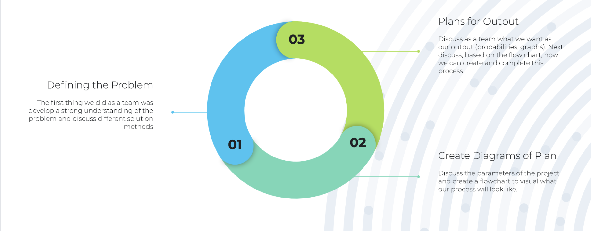

Protecting from ZBY1
Team R: Joseph Grosso, Andrew Farley, Kyle Singer, Andrew Fryer
Challenge
Goal: Monitor the spread of ZBY1 in the given Ontario High School
Determine the probability of students and faculty contracting the virus
Show the correlations that would cause virus transmission
Stakeholders
Center for Disease Control and Prevention
Faculty (Teachers and Teaching Assistants)
Students
Parents of Students
Family Friends
Children and Parents of Faculty
Ontario (government and citizens)
Canada (government and citizens)
NB 2016 Energy
Looking at the graph we can see how the types of energy in NB have changed over the last few years
We can also view this data as a line graph
Capacity in MWh Percentage
Year, 2005, 2015, 2016 Oil & Diesel, 37.6, 35.2, 35.2 Natural Gas, 8.0, 7.7, 7.7 Coal, 12.8, 10.8, 10.8 Nuclear, 16.1, 15.6, 15.6 Biomass, 3.0, 2.8, 2.8 Wind, 0.0, 6.5, 6.5 Hydro, 22.5, 21.3, 21.3
Or a pie chart
Energy, Oil and Diesel, Natural Gas, Coal, Nuclear, Biomass, Wind, Hydro Data, 3.9, 15.5, 20.7, 29.9, 3.6, 5.6, 20.6
Our Process
Design Process

Development Process
Divided the project into three sections:
Algorithm Simulation
Probability Functions
Visualizations
Integrate different pieces as a team
Technology
Pandas
Reads excel file into Python environment
Numpy
Allows algorithm to be efficient with memory and run fast computations
Plotly
Powerful visualizaitons of probabilities of infection
Our Solution
Simulation/Algorithm
Iterates over the 6 possible times
Periods 1-2, Lunch, Periods 3-4, Clubs
Custon PeopleQuery class
Interface with and store data
Utilizes probability functions on each iteration
Computes likelihood of infection
Probabilities
Probabilities are divided based on the activity
Class, Lunch, Extra Curriculars, Transitions
Each calculation accounts for:
Carefulness, Exposure, Time, Supervisors
Additional things considered:
Based on COVID-19 restrictions
Social distancing and mask use
Output
Two Outputs:
Graphs displaying the relationship of each person with another
Shows probability of contracting the virus over time
Text file containing the final probabilities after 1 day
Our Code
probabilities.py
Lines: 5-52
algorithm.py
Lines: 1-27, 134-235
graph_experiments.py
Lines: 1-10, 94-143
Assumptions
Teaching assistants are near graduation or are post-grad students
Average age ~22
The amount of time exposed effects the probability of being infected
Extra-curriculars are outside the normal schedule but are the same length as a class
Missing
Surface contact leading to contracting the virus
Accounting for students in the same family having overlapping risk
Next Steps
Phone App
Creating a phone app like the COVID-19 response app to inform
Recommendations
Sharing recommendations of whether to stay home or not if at a high risk of contracting
Risk Analysis
Determining what risk is too much of a risk for students and/or teachers (based on age, health) to do in person schooling
PPE
Simulating the impact of wearing glves and masks to provide recommendations on PPE requirements
Next Steps
PPE
Simulating the impact of wearing glves and masks to provide recommendations on PPE requirements
Online
Determining when students should be required to attend school virutally
Semester Structure
Optimizing learning and safety by simulating differe semester structures
Questions?